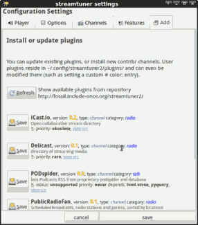

Plugin Manager 2 - 📦 Add
For updating or installing new plugins (extra channels or features), there's a user plugin manager. It's available as feature extension itself.
See the F12 config dialog 🔌 Feature section.
Enable the ⨯ Plugin Manager (listed near the end).
Restart streamtuner2 one last time for this change to take effect.
Once activated it brings up a new 📦 Add tab in the configuration window.

You can scan for available/new plugins there. And have them downloaded right away. New plugins are just downloaded, not implictly enabled. Reopen the config dialog to see them in the regular 📻 Channels or 🔌 Feature tabs, and then enable them.
Updated plugin versions won't be instantiated right away if they've been active already. That requires either a restart. Or disabling + saving once, then reenabling them.
Configuration
Alternative download repositories may be configured. (Little practical value at the moment.)
-
And you can let the plugin manager handle ☑ autoactivation of changed plugin states.
After reconfiguring existing channel plugins, they get automatically instantiated or disabled in the user interface. (Which avoids the usual restart).
This currently doesn't work with feature/core plugins. Plugin deactivation is mostly visual, but does not undo menu extensions or undefine callback hooks.
User plugins
Downloaded plugins are stored in ~/.config/streamtuner2/plugins. To remove them, delete the individual *.py files there manually. But keep the __init__.py stub.
Core plugins (those which are installed system-wide) can often also be updated. The user-saved plugin will take precedence after a restart. However the version number in PluginManager2 still shows the system-installed/older version regardless.
So you'll have to take care to eventually refresh/delete outdated user plugins, whenever you install a newer Streamtuner2 version.
Disable user plugin loading
Since this is still rather experimental, you may disable all associated features by starting ST2 via:
streamtuner2 -d pluginmanager2Which inhibits loading this whole extension. (The -d flag also works for any other plugin name.)